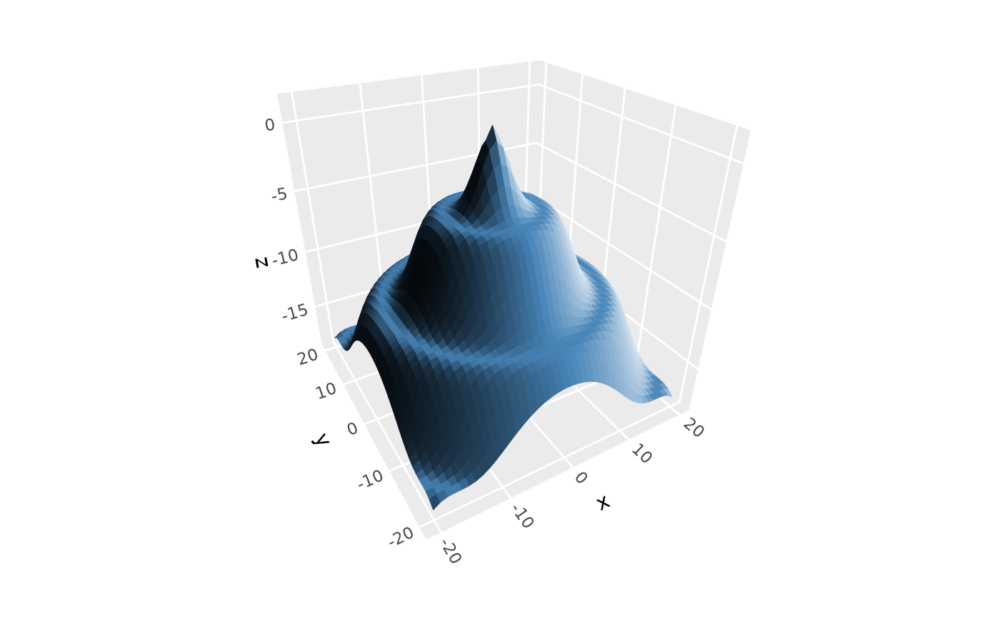
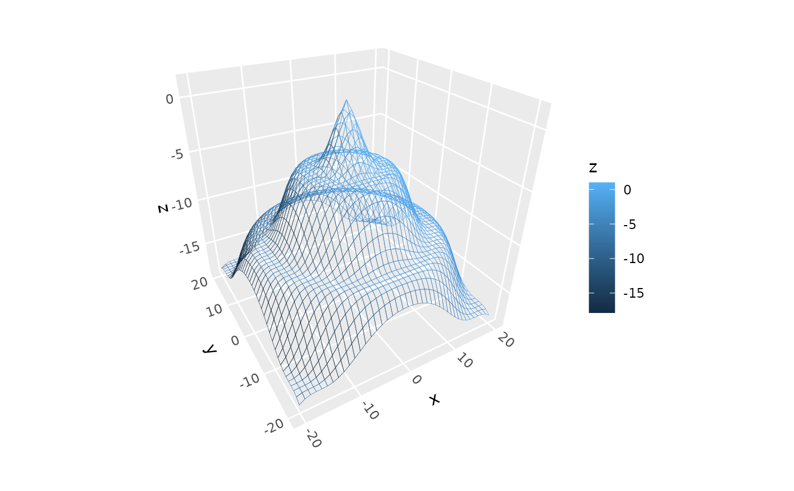
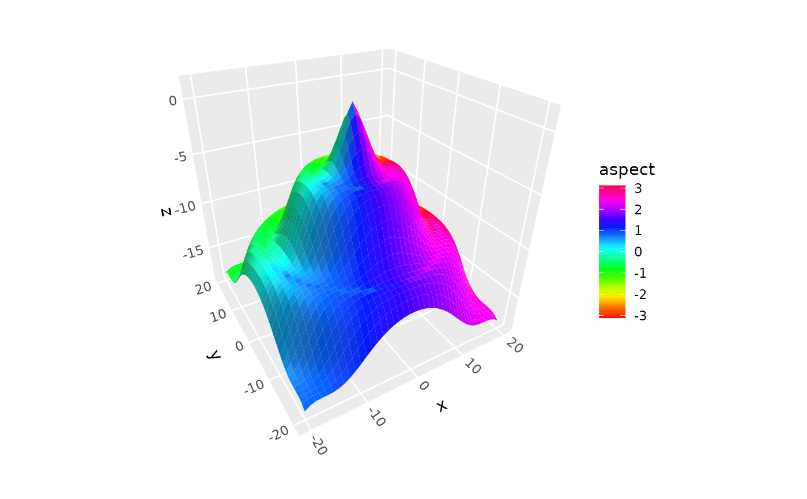
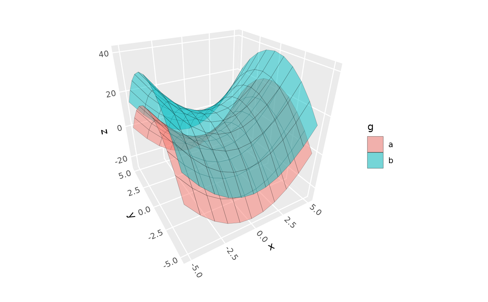

Takes user-provided (x, y, z) point data and prepares it for surface rendering. If data form a regular grid, can render either a GeomSurface3D of rectangular or triangular tiles, or a GeomRidgeline3D or GeomContour3D set of surface slices; otherwise, renders triangular tiles via Delaunay trianuglation.
Usage
stat_surface_3d(
mapping = NULL,
data = NULL,
geom = "surface_3d",
position = "identity",
...,
cull_backfaces = FALSE,
light = NULL,
na.rm = FALSE,
show.legend = NA,
inherit.aes = TRUE
)
geom_surface_3d(
mapping = NULL,
data = NULL,
stat = "surface_3d",
position = "identity",
...,
method = "auto",
grid = NULL,
cull_backfaces = FALSE,
sort_method = "auto",
scale_depth = TRUE,
force_convex = TRUE,
light = NULL,
na.rm = FALSE,
show.legend = NA,
inherit.aes = TRUE
)Arguments
- mapping
Set of aesthetic mappings created by
aes(). Must includex,y, andz.- data
Data frame containing point coordinates.
- geom
Geom to use for rendering. Defaults to GeomSurface3D. Use GeomRidgeline3D for ridgeline rendering.
- position
Position adjustment, defaults to "identity".
- ...
Other arguments passed to the layer.
- cull_backfaces, sort_method, force_convex, scale_depth
Advanced polygon rendering parameters. See polygon_rendering for details.
- light
A lighting specification object created by
light(),"none"to disable lighting, orNULLto inherit plot-level lighting specs from the coord. Specify plot-level lighting incoord_3d()and layer-specific lighting ingeom_*3d()functions.- na.rm
If
FALSE, missing values are removed.- show.legend
Logical indicating whether this layer should be included in legends.
- inherit.aes
If
FALSE, overrides the default aesthetics.- method
Tessellation method passed to
geom_surface_3d(): "auto" (default), "grid", or "delaunay".- grid
Tile geometry for regular grids: "rectangle" (default), "tri1", or "tri2".
Details
For regular grids, computes point-level gradients. Works with
both geom_surface_3d() for mesh rendering and geom_ridgeline_3d() for
ridgeline rendering.
Computed variables
For regular grid data:
- dzdx, dzdy
Partial derivatives at each point
- slope
Gradient magnitude: sqrt(dzdx^2 + dzdy^2)
- aspect
Direction of steepest slope: atan2(dzdy, dzdx)
For irregular data, gradient variables are NA.
Grid detection
The stat automatically detects whether data forms a regular grid by checking
if nrow(data) == length(unique(x)) * length(unique(y)). Regular grids
get point-level gradient computation; irregular point clouds are passed
through for Delaunay tessellation by the geom.
See also
geom_surface_3d(), geom_ridgeline_3d(), stat_function_3d(),
coord_3d()
Examples
# Regular grid data ------------------------------------------
# simulated data and base plot for basic surface
d <- dplyr::mutate(tidyr::expand_grid(x = -10:10, y = -10:10),
z = sqrt(x^2 + y^2) / 1.5,
z = cos(z) - z)
p <- ggplot(d, aes(x, y, z)) +
coord_3d(light = light(mode = "hsl", direction = c(1, 0, 0)))
# surface with 3d lighting
p + geom_surface_3d(fill = "steelblue", color = "steelblue", linewidth = .2)

# mesh wireframe (`fill = NA`) with aes line color
p + geom_surface_3d(aes(color = z), fill = NA,
linewidth = .5, light = "none") +
scale_color_gradientn(colors = c("black", "blue", "red"))

# triangulated surface (can prevent lighting flaws)
p + geom_surface_3d(fill = "#9e2602", color = "black", grid = "tri2")

# use after_stat to access computed surface-orientation variables
p + geom_surface_3d(aes(fill = after_stat(slope)), grid = "tri2") +
scale_fill_viridis_c() +
guides(fill = guide_colorbar_3d())

# use `group` to plot data for multiple surfaces
d <- expand.grid(x = -5:5, y = -5:5)
d$z <- d$x^2 - d$y^2
d$g <- "a"
d2 <- d
d2$z <- d$z + 15
d2$g <- "b"
ggplot(rbind(d, d2), aes(x, y, z, group = g, fill = g)) +
coord_3d(light = "none") +
geom_surface_3d(color = "black", alpha = .5, light = NULL)
# terrain surface with topographic hillshade and elevational fill
ggplot(mountain, aes(x, y, z, fill = z, color = z)) +
geom_surface_3d(light = light(direction = c(1, 0, .5),
mode = "hsv", contrast = 1.5),
linewidth = .2) +
coord_3d(ratio = c(1, 1.5, .75)) +
theme_light() +
scale_fill_gradientn(colors = c("darkgreen", "rosybrown4", "gray60")) +
scale_color_gradientn(colors = c("darkgreen", "rosybrown4", "gray60")) +
guides(fill = guide_colorbar_3d())
 # stat_surface_3d with alternative geoms ----------------------------
# horizontal slices with geom_ridgeline_3d
ggplot(mountain, aes(x, y, z)) +
stat_surface_3d(geom = "ridgeline_3d",
fill = "black", color = "white",
light = "none", linewidth = .1) +
coord_3d(ratio = c(1, 1.5, .75), yaw = 45)
# stat_surface_3d with alternative geoms ----------------------------
# horizontal slices with geom_ridgeline_3d
ggplot(mountain, aes(x, y, z)) +
stat_surface_3d(geom = "ridgeline_3d",
fill = "black", color = "white",
light = "none", linewidth = .1) +
coord_3d(ratio = c(1, 1.5, .75), yaw = 45)
 # elevation contours with geom_contour_3d
ggplot(mountain, aes(x, y, z, fill = z)) +
stat_surface_3d(geom = "contour_3d", light = "none",
bins = 25, sort_method = "pairwise",
color = "black") +
coord_3d(ratio = c(1, 1.5, .75), yaw = 45) +
scale_fill_viridis_c(option = "B")
# elevation contours with geom_contour_3d
ggplot(mountain, aes(x, y, z, fill = z)) +
stat_surface_3d(geom = "contour_3d", light = "none",
bins = 25, sort_method = "pairwise",
color = "black") +
coord_3d(ratio = c(1, 1.5, .75), yaw = 45) +
scale_fill_viridis_c(option = "B")
 # Irregular point data ---------------------------------------
set.seed(42)
pts <- data.frame(x = runif(200, -2, 2), y = runif(200, -2, 2))
pts$z <- with(pts, sin(x) * cos(y))
ggplot(pts, aes(x, y, z = z, fill = z)) +
stat_surface_3d(sort_method = "pairwise") +
scale_fill_viridis_c() +
coord_3d(light = "none")
# Irregular point data ---------------------------------------
set.seed(42)
pts <- data.frame(x = runif(200, -2, 2), y = runif(200, -2, 2))
pts$z <- with(pts, sin(x) * cos(y))
ggplot(pts, aes(x, y, z = z, fill = z)) +
stat_surface_3d(sort_method = "pairwise") +
scale_fill_viridis_c() +
coord_3d(light = "none")